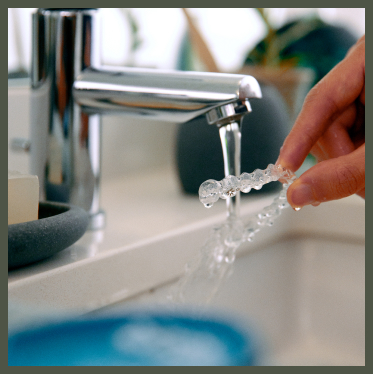
Customized beautiful prescription sign.
「 訂製美麗處方籤：隱適美矯正與戴蒙矯正 」
對許多人來說，「牙齒矯正」是開啟第二人生的重要關鍵之一。
該如何選擇矯正器？選擇何種品牌？選擇哪位矯正醫師？都是一道道難題。
昶佳深知您對於變美的渴望，也明白您在矯正旅途中的顧慮。
我們都只為您推薦最適合您的治療方案，訂製專屬於您的美麗處方籤。
隱適美矯正
隱適美是由Align Technology所開發的高科技隱形牙套，目前在全球已經擁有超過1000萬的使用者，是世界級知名的領導品牌，更是眾多好萊塢明星指定使用的隱形矯正器。
隱適美採用獨家專利研發的電腦軟體(ClinCheck)，可以模擬牙齒矯正過程的移動情形，讓您預見矯正的結果，更結合大數據分析與醫師專業的診斷，為您量身訂做數位隱形牙套以輕柔和緩的力量，精確有效率的矯正牙齒，讓您的矯正療程更加舒適無負擔！
自鎖式戴蒙矯正
美國Damon System戴蒙矯正器則擁有獨一無二的滑蓋設計，以最細最軟的線來讓牙齒移動，其高科技矯正線比傳統矯正線更柔軟、更舒適、更快速達到所需之效果，表示在治療中您的牙齒與傳統金屬矯正相較而言將比較不會疼痛。經臨床證實可明顯減少治療時間及回診次數並獲得極佳的治療效果，矯正的過程一樣可以開口大笑。
複雜的口腔問題
越仰賴醫師的專業技術
常見齒列問題有暴牙、開咬、錯咬、齒列擁擠與齒列不齊等問題。
在矯正技術日趨成熟技術下，皆能達成良好矯正效果，但並不是使用隱適美或戴蒙等新型矯正方法就能擁有完美笑容。
齒顎矯正十分重視醫師經驗，越是複雜的案例越需要依靠醫師的經驗與技術，縝密的計劃加上醫師的技術，才能夠完美解決齒列問題。
量身打造專屬矯正計畫
透明放心無負擔
針對患者口腔狀況及訴求進行客製化、詳細且周全的矯正計畫，不管預算高低、齒列情況複雜程度、矯正過程中能接受的不方便程度、治療結束後的預期成果等等，所有需求昶佳都幫您考量到位。
不管是隱適美隱形牙套矯正或戴蒙自鎖式矯正，在治療前就清楚列出各項步驟及金額，治療過程詳細透明，輕鬆矯正不是夢。
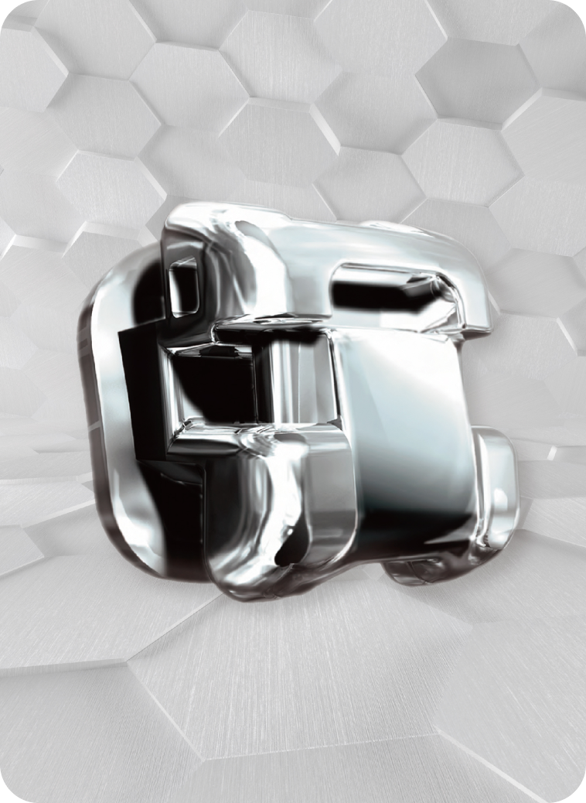
新型固定式矯正—戴蒙自鎖式矯正
有別於傳統的矯正觀念傾向使用重力矯正(heavy force technique)，在每次更換矯正線之後，患者容易發生疼痛及不舒服的現象；
戴蒙系統採用最新的矯正觀念—微力矯正(light force technique)，讓牙齒做生理性的移動，不但可以減低矯正過程的疼痛、活化牙周細胞、還能加快牙齒的移動速度。
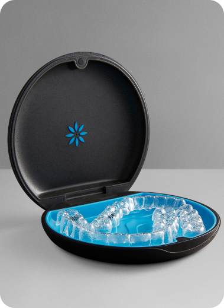
隱形牙套中的世界領導品牌—隱適美
隱適美為 Align Technology 公司所設計的隱形牙套，在全球擁有超過百萬成功案例，並取得八百多項專利。
而我們會選擇隱適美隱形牙套的主要考量，是因為隱適美擁有獨家專利材質SmartTrack®，並在牙齒矯正上有更多臨床經驗。
對患者來說，無論在佩戴時的舒適感、矯正時的效果或是拆卸時的方便性，都能擁有更加良好的體驗及療程。
隱形牙套矯正與戴蒙矯正的介紹
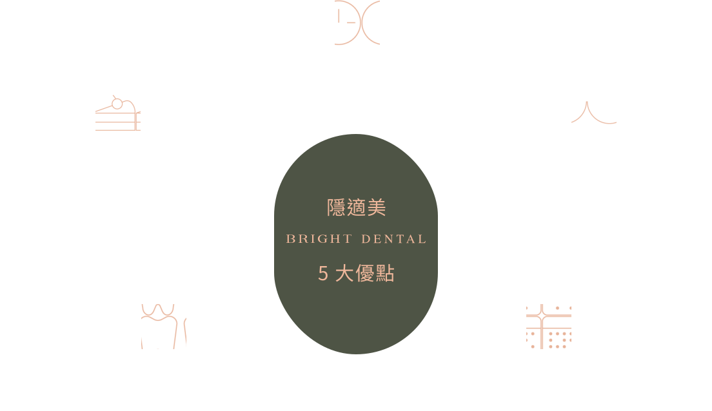
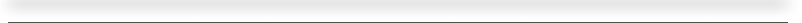
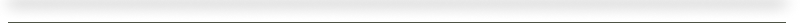
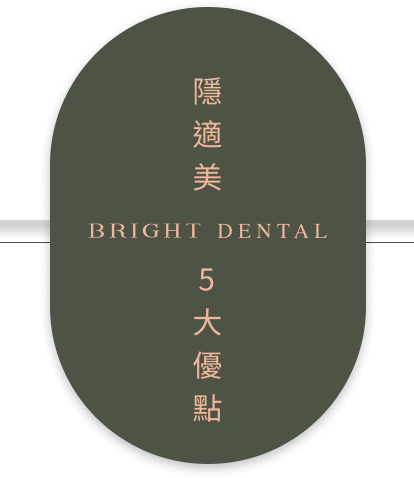
每天固定配戴20-22個小時，
自信笑容就離你更近了些。

矯正的過程裡，也能隨心享用美食。
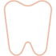
口腔清潔方便又簡單，
隱適美從不耽誤你的休憩時光。

回診數大幅降低，
輕鬆安排你的生活日程。

隱適美透明得讓人幾乎不會察覺，
開心時就盡情嶄露笑容吧！
隱形牙套品牌這麼多，為何要選擇隱適美？
大數據分析：
隱適美為隱形矯正國際大廠，全球使用超過1000萬案例，藉由大數據的分析，更能從中推算「原本異常咬合的牙齒位置，如何成功移動到正確咬合的位置」，確保牙齒矯正品質。
多項獨家專利：
隱適美擁有多項獨家專利，其中隱適美隱形牙套是使用 SmartTrack®材質製成，因此使用上更加舒適，而且更容易戴上與拆下。
專業人員製作：
隱適美所有牙套均由美國原廠製作直送台灣，有專業的技術人員打磨，更貼合病患的牙齒。
隱形牙套品牌這麼多，
為何要選擇隱適美？
大數據分析：
隱適美為隱形矯正國際大廠，全球使用超過1000萬的案例，藉由大數據的分析，更能從中推算「原本異常咬合的牙齒位置，如何成功移動到正確咬合的位置」，確保牙齒矯正品質。
多項獨家專利：
隱適美擁有多項獨家專利，其中隱適美隱形牙套是使用 SmartTrack®材質製成，因此使用上更加舒適，而且更容易戴上與拆下。
專業人員製作 :
隱適美所有牙套均由美國原廠製作直送台灣，有專業的技術人員打磨，更貼合病患的牙齒。
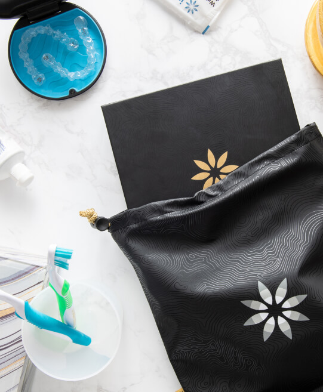

Orthodonitc step
隱適美矯正步驟
1.諮詢溝通：
醫師會與病患進行溝通，了解病患的需求進而制訂診療計畫。
2.資料蒐集：
利用設備取得口腔的資料，包括X光片、口內外照片、口內數位掃描等。
3.設計治療計畫：
根據取得的電腦數據設計牙齒移動的方式，讓患者可預見治療結果。
4.製作牙套：
確定治療計畫後，將資料回傳給隱適美美國原廠，製作隱形牙套。
5.佩戴牙套：
按照醫師指示，約每一至二周更換一副隱形牙套，可恢復整齊的牙齒。
Orthodonitc step
隱適美矯正步驟
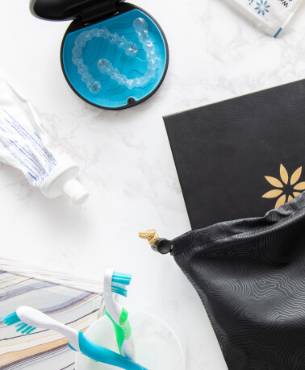
1.諮詢溝通：
醫師會與病患進行溝通，了解病患的需求進而制訂診療計畫。
2.資料蒐集：
利用設備取得口腔的資料，包括X光片、口內外照片、口內數位掃描等。
3.設計治療計畫：
根據取得的電腦數據設計牙齒移動的方式，讓患者可預見治療結果。
4.製作牙套：
確定治療計畫後，將資料回傳給隱適美美國原廠，製作隱形牙套。
5.佩戴牙套：
按照醫師指示，約每一至二周更換一副隱形牙套，可恢復整齊的牙齒。
要怎麼挑選隱適美矯正醫師？
隱適美依據累計的案例與經驗，更分為不同級別，而我們的張珈瑜醫師便是隱適美鑽石級認證的矯正醫師，擁有豐富的隱適美矯正經驗，面對各種複雜的齒列問題都能迎刃而解，想要找回自信笑容，來昶佳牙醫診所就對了！
要怎麼挑選
隱適美矯正醫師？
隱適美為隱形矯正國際大廠，全球使用超過1000萬的案例，藉由大數據的分析，更能從中推算「原本異常咬合的牙齒位置，如何成功移動到正確咬合的位置」，確保牙齒矯正品質。
戴蒙矯正—從「齒」展開新人生
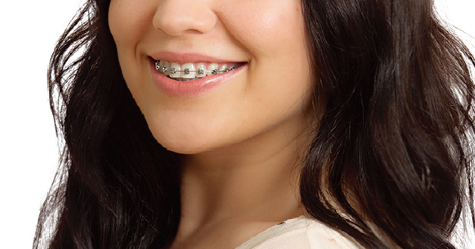
NO.1 固定式矯正更舒適的選擇—戴蒙矯正
有別於傳統的金屬矯正器，戴蒙矯正器以可以滑動開關的蓋子來將矯正線固定住，使牙齒所受到的推移力道變小，不僅較為舒適、疼痛感降低，還可讓牙齒移動的速度變得更快。
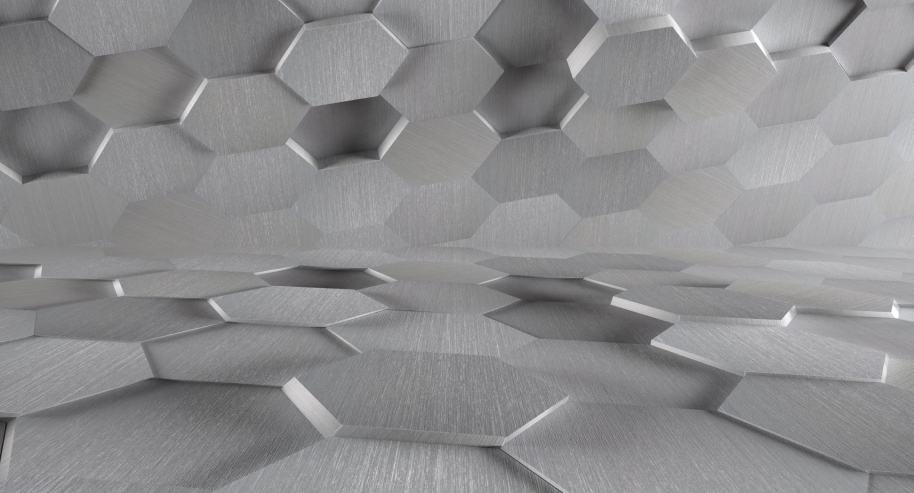
NO.2 最新、最有保障的固定式矯正器—戴蒙Q
昶佳不僅在隱形牙套矯正提供領先品牌—隱適美，在固定式矯正方面也選擇最主流的品牌、最新一代的矯正牙套—「戴蒙Q(Damon Q)」。
戴蒙Q使用醫療級不銹鋼金屬材質，矯正器不變形，提升療程效率，品質安全更有保障，此外，矯正器的圓滑設計也不易刮傷口腔黏膜，讓您在矯正治療過程舒適又安心。
舒適度提高
比起傳統矯正器，戴蒙矯正器較小、表面也較圓滑，加上獨特自鎖式設計，不僅可以減少過往因矯正器摩擦使口腔內破皮產生傷口的經驗，也能更平順的移動牙齒，這些都讓戴蒙矯正器有效提高舒適度。根據患者平均感受資料顯示，戴蒙矯正器比起傳統矯正降低了約6成7的疼痛感受度。
矯正效率提高
由於圓滑的矯正器與自鎖式系統，戴蒙矯正器會隨著時間自行收緊，讓戴蒙矯正器縮短過往傳統矯正所需要的療程時間；同時，也不用頻繁回診給醫師調整矯正線鬆緊度，可以減少回診次數，對於忙碌的現代人更加友善。
清潔方便、美觀性提升
可以省去傳統矯正的橡皮筋等輔助固定工具，在清潔時不需要大費周章，也可以更方便的清潔口腔。以往傳統矯正使用五顏六色的橡皮筋，只要一開口就吸引大家的視線；選用戴蒙矯正器可以看到透明或金屬材質支撐，但不會出現橡皮筋，較傳統矯正器美觀。
For your beauty and healthy
為了您的美麗與健康，我們這麼做‧‧‧
「我的牙齒好像有點凸…」
「我上下排牙齒對不上很難咬斷食物…」
「我希望牙齒能更加整齊、笑露八顆牙！」
進行牙科治療的出發點有好多種，但共同的目的都是讓自己更加美麗、更加健康。不管您想進行治療的出發點為何，昶佳牙醫都能透過詳細的檢查與客製化療程的擬定，搭配最適合您的診療方式，協助您達成預期中的目標。
「我是服務業，有每天面對客人的需求，所以我想做隱適美矯正！」
若您已確定矯正治療的方式，張醫師會替您的牙齒進行完整詳細的評估與檢查，設計出專屬於您的治療菜單，讓每位病患都能在療程開始前清楚了解自己的狀況與後續的治療規劃。
「我想進行矯正，但是我該做哪種矯正？」
對於想進行矯正治療的患者，昶佳會通盤考慮您的金錢預算、時間規劃、預期目標、口腔狀況等等，藉由醫師的專業與經驗推薦每位病患最合適的矯正治療方式。
「治療過程中也能感受到醫師的用心！」
為了完美達到患者的訴求與美觀，從一開始的治療計畫擬定到矯正器的裝戴，每一個步驟、每一個矯正裝置都是由張珈瑜醫師親自處置與調整，每次的回診也不只是將矯正器交給患者，更會仔細地替病患檢查，讓患者了解過程中牙齒的狀況。
昶佳牙醫診所提供主流、新一代的矯正牙套，給您高品質的治療及舒適的體驗。
想找到屬於自己的自信笑容嗎？
讓昶佳牙醫陪您走過牙齒矯正的旅程，一起探索自己最美的模樣吧！